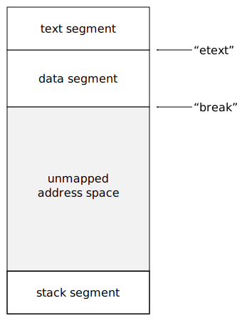

Memory Management Glossary: B¶
A | B | C | D | E | F | G | H | I | J | K | L | M | N | O | P | Q | R | S | T | U | V | W | X | Y | Z
- backing store
Backing store(2) is typically part of a hard disk that is used by a paging or swapping system to store information not currently in main memory. Backing store is slower and cheaper than main memory.
Other storage may, less commonly, be used in place of a hard disk (for instance, magnetic tape, floppy disk, or historically, magnetic drum).
In general, backing store may mean any locations used to store information when its preferred or natural location is otherwise being used: for example, memory used by a graphical interface to keep a copy of the contents of obscured windows.
Similar term
- barrier(1)
A barrier is a block on reading from or writing to certain memory(2) locations by certain threads or processes.
Barriers can be implemented in either software or hardware. Software barriers involve additional instructions around load or store(1) operations, which would typically be added by a cooperative compiler. Hardware barriers don’t require compiler support, and may be implemented on common operating systems by using memory protection.
Relevance to memory management
Barriers are used for incremental or concurrent garbage collection.
See also
- barrier(2)
A memory barrier is an instruction on certain processor architectures that will ensure certain guarantees about the order of accesses to memory.
Some processor architectures make very few guarantees about the relative orders of load and store(1) operations in the instruction stream and the actual order of accesses to main memory. These architectures will often have special instructions that make stronger guarantees.
For example, the ARM has the DMB (Data Memory Barrier) instruction:
It ensures that all explicit memory accesses that appear in program order before the DMB instruction are observed before any explicit memory accesses that appear in program order after the DMB instruction.These instructions are vital for certain synchronization operations.
- barrier hit
See
- base pointer
A base pointer is a pointer to the base or start of an object.
This term is commonly used in opposition to derived pointer.
Note that Boehm & Chase (1992) define “base pointer” to be “any pointer value directly recognizable by the collector(1)”, and this may well include interior pointers.
Opposite term
- best fit
The allocation policy that always allocates from the smallest suitable free block. Suitable allocation mechanisms include sequential fit searching for a perfect fit, first fit on a size-ordered free block chain, segregated fits, and indexed fits. Many good fit allocators are also described as best fit.
In theory, best fit may exhibit bad fragmentation, but in practice this is not commonly observed.
See also
- BIBOP
Also known as
big bag of pages.
BIBOP, or BIg Bag Of Pages, is a technique that encodes object type in the high-order bits of their address, by using a lookup table that maps from those bits to a type.
Despite the name, the blocks involved need not be the size of a page.
BIBOP requires storing only objects of the same type in a block, but this has the same advantages as segregated fits in general.
Historical note
This technique was invented for the PDP-10 MACLISP by JonL White and Stavros Macrakis. It was an advance on earlier techniques that divided the address space into contiguous blocks for each type.
- big bag of pages
See
- binary buddies
The most common buddy system allocation mechanism, in which all block sizes are a power of two. Finding a block’s buddy is then a matter of flipping the appropriate bit in the block’s address.
Internal fragmentation is usually high, because objects are often not a good fit for power-of-two sized blocks.
See also
- bit array
See
- bit table
See
- bit vector
See
- bitmap
Also known as
bit array, bit table, bit vector, bitset.
A table of bits.
Relevance to memory management
Bitmaps are sometimes used to represent the marks in a mark-sweep collector, or the used memory in a bitmapped fits allocator.
- bitmapped fit
A class of allocation mechanisms that use a bitmap to represent the usage of the heap. Each bit in the map corresponds to a part of the heap, typically a word, and is set if that part is in use. Allocation is done by searching the bitmap for a run of clear bits.
Bitmapped fit mechanisms have good locality of reference, as they avoid examining in-band headers when allocating.
See also
- bitmask
- A bitmap used to select or exclude a set of bits in another bitmap.
- bitset
See
- black
In a tri-color marking scheme, black objects are objects that have been scanned.
More precisely, black objects have been noted reachable and the collector(2) has finished with them and need not visit them again (for the purposes of tracing).
- blacklisting
black-listing A conservative garbage collector can be made more effective by blacklisting values which resemble addresses that may be allocated at in the future, but are known not to be pointers . This list is then used to avoid allocation at those addresses.
For example, such values can be gathered by scanning the roots before any objects have been allocated.
- block
Block is a vague term for an (often contiguous) area of memory(1). Often used to describe memory(2) allocated by an allocator such as malloc.
In the MPS
The term block is used as a general term for a unit of allocation, with object being reserved for formatted objects.
- bounds error
See
- boxed
Boxed objects are represented by a pointer to a block of memory(2) that contains the object data. Sometimes the pointer is tagged to distinguish it from an unboxed object, or to represent its type. Only the pointer is duplicated when the object is passed around, so updates to the object are reflected everywhere.
Opposite term
- break-table
A break-table is a data structure used by a mark-compact collector to store the relocation information.
See also
- brk
brk is a Unix system call that sets the limit of the data segment. This limit is known as the break.
The C library implementation of malloc usually allocates memory(2) for the heap by extending the data segment using brk or sbrk.
Most implementations of malloc never shrink the data segment, so the memory usage of a process never decreases. In most Unix systems, the data segment resides immediately above the program code (text segment) in the address space.
A simplified view of the address space of a Unix process.
- broken heart
Copying garbage collectors move reachable objects into another semi-space. They leave a forwarding pointer in the old location, pointing to the new. The object at the old location is known as a broken heart.
Similar term
- bucket
In a generational garbage collector, it is often desirable to divide generations by the age of the object. These divisions are known as buckets.
See also
generational garbage collection, aging space, creation space.
- buddy system
Buddy systems are a subclass of strict segregated fit allocation mechanisms which make splitting and coalescing fast by pairing each block with a unique adjacent buddy block.
There is an array of free lists, one for each allowable block size. Allocation rounds up the requested size to an allowable size and allocates from the corresponding free list. If the free list is empty, a larger block is selected and split. A block may only be split into a pair of buddies.
A block may only be coalesced with its buddy, and this is only possible if the buddy has not been split into smaller blocks.
The advantage of buddy systems is that the buddy of a block being freed can be quickly found by a simple address computation. The disadvantage of buddy systems is that the restricted set of block sizes leads to high internal fragmentation, as does the limited ability to coalesce.
Different sorts of buddy system are distinguished by the available block sizes and the method of splitting. They include binary buddies (the most common), Fibonacci buddies, weighted buddies, and double buddies.
- buffer
A buffer is a large block of memory(2) from which blocks are allocated contiguously, as a simple technique for fast allocation.
By keeping only a high-water mark (that is, a pointer to the start of unused memory), the buffer technique avoids expensive in-band headers and the searching of free block chains. Buffers tend to, however, lead to external fragmentation.
In the MPS
Buffers are implemented using allocation points attached to pools.
- bus error
Strictly speaking, a bus error is a fault on a hardware bus, such as when an invalid address is issued.
Generally, any hardware exception caused by a memory(2) access (for example, loading an unaligned word) is termed a bus error. The term is often used more loosely as a synonym for any memory access error.
See also
- byte(1)
A unit of storage measurement, equal to 8 bits.
It does not matter how the bits are arranged: a byte is just a quantity.
This is the sense of byte used in the terms kilobyte, megabyte, gigabyte, terabyte, etc. The prefixes in these terms derive from the SI prefixes for powers of 1000, but since powers of two are much more common in binary computers, they are used to denote powers of 1024 (210).
See also
word.
- byte(2)
A data type defined by a processor architecture.
For example, the smallest addressable memory location on the Intel x86 family is the 8-bit byte.
Historical note
The PDP-10 had 36-bit words, and defined “byte” to be a general sub-word bit-field: compare byte(3). On this machine it was commonplace for characters to be packed four or five to a word using 9- or 7-bit bytes respectively.
See also
word.
- byte(3)
A contiguous set of bits used to represent a range of values compactly.
The number of bits in a byte is a measure of the information content of the byte. An n-bit byte can represent 2n distinct values.
Bytes may be packed into (or otherwise stored in bit-fields of) integers, words, or other aligned values for space efficiency.
- byte(4)
A data type or storage unit defined by a programming language.
In ANSI/ISO C, “the unit of data storage large enough to hold the basic character set of the execution environment”. In this sense, it is often used synonymously with the C type char. C defines sizeof(char) to be 1. Many architectures that run C programs equate this sense of byte and byte(2).

Previous topic
Next topic
Downloads
MPS Kit release 1.111.0
All MPS Kit releases
Issues
Known issues
Issues fixed in release 1.111.0